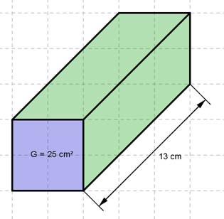

Aufgabe 29 Berechnen Sie die Oberfläche O eines quadratischen Prismas mit einer Grundfläche G = 25 cm² und einer Länge l von 13 cm.  O = 2 * G + M M = 4 * a * l G = a² = 25² mm² |√ a = 5 cm O = 2 * 25 cm² + 4 * 5 cm * 13 cm = 50 cm² + 260 cm² = 310 cm²